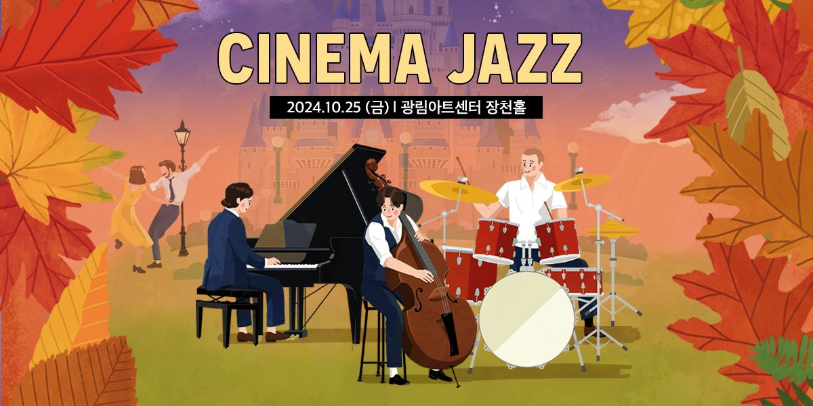
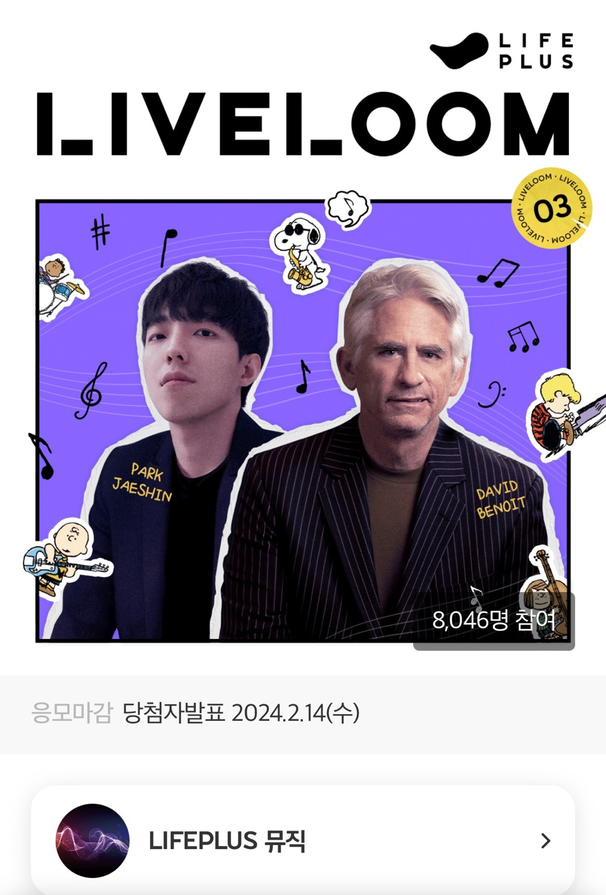
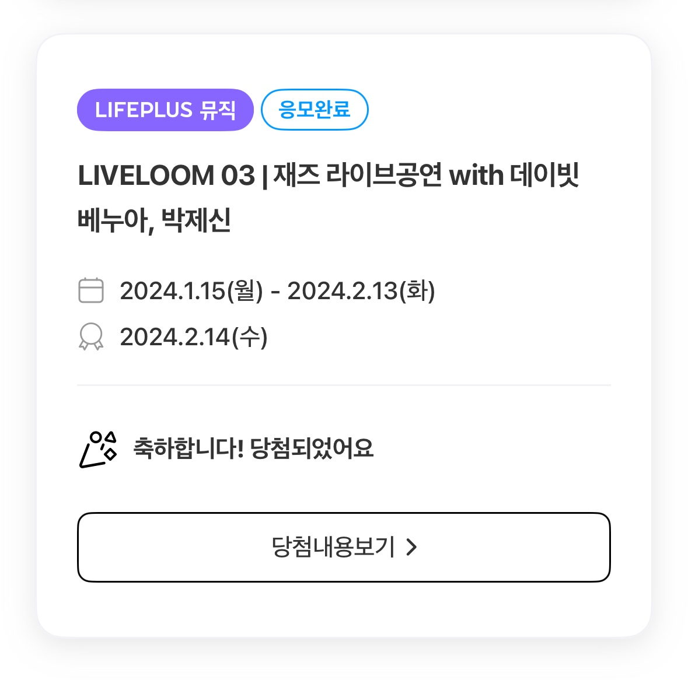
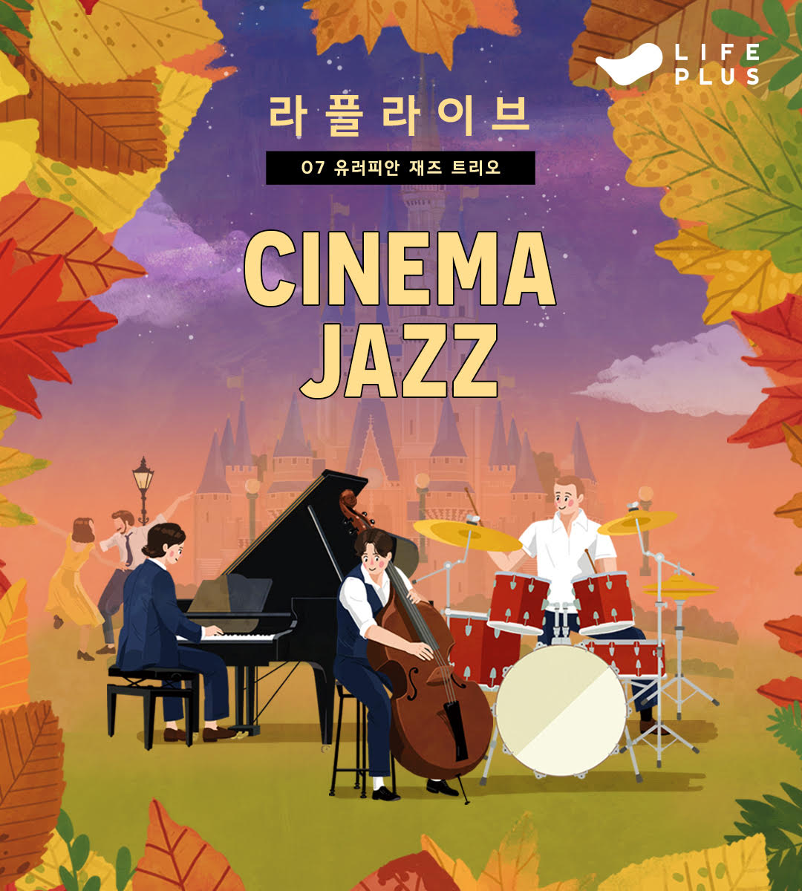
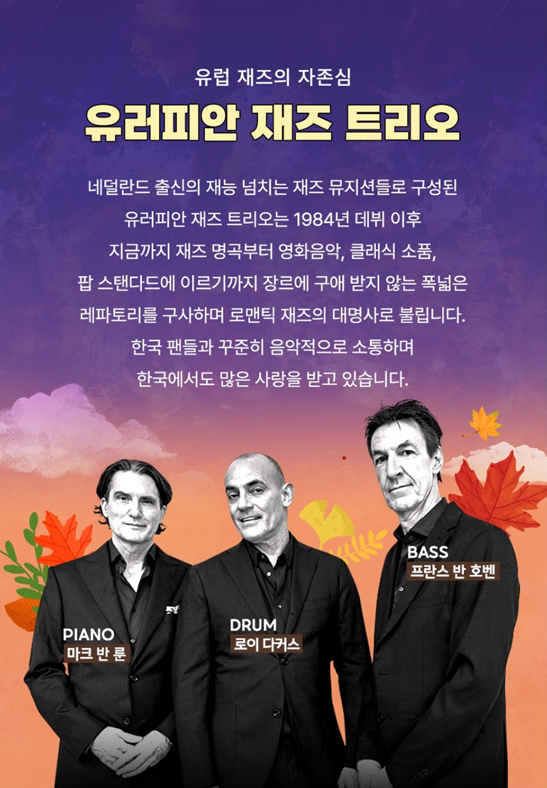
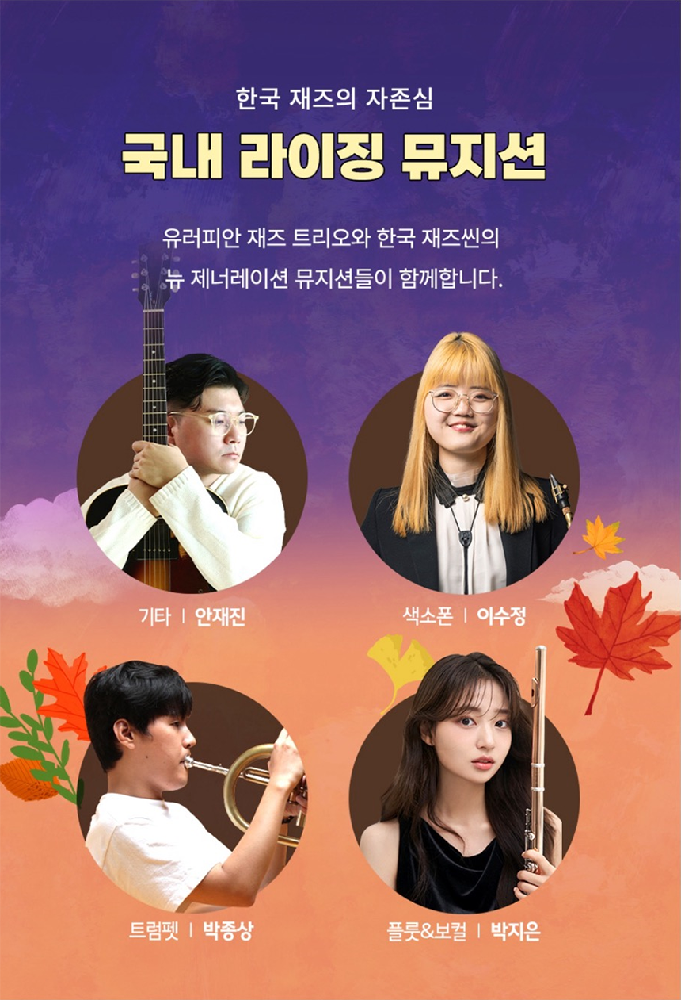
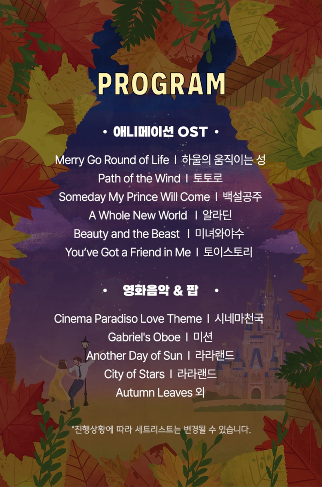

안녕하세요 한스입니다.
유러피안 재즈 트리오가 2024년 10월 내한합니다. 한화 금융그룹에서 운영하는 라이프플러스는 세계의 특별한 뮤지션들을 초대하여 응모 추첨 방식으로 공연들을 열고 있는데요, 이번 7번째 공연에는 유러피안 재즈 트리오를 초청했습니다. 저는 올해 2월 겨울 스누피 피아노 OST 로 유명한 데이빗 베누어의 공연에 응모하고 당첨이되어 다녀왔었습니다. 이번에는 유러피안 재즈트리오라니 정말 재즈에 진심으로 대중과 소통하는 라이프플러스 재단입니다.
 
라플라이브 07 재즈 - 유러피안 재즈 트리오 공연 응모
라플라이브 07 재즈 | 유러피안 재즈 트리오 공연
디즈니, 지브리, 라라랜드 OST를 재즈 라이브로!
web.lifeplus-tribes.com
이번 공연에는 총 170명이라는 많은 당첨자를 선정한다고 하는데요, 응모는 9월 9일(월)~10월 9일(수) 까지이고 위의 링크로 앱에서 신청하실 수 있습니다. 가입은 필요하나 응모가 간단하니 꼭 신청해보세요!
이번 공연은 애니메이션 OST 와 영화음악들을 유러피안 재즈 트리오의 아름다운 선율로 감상할 수 있습니다.
라플라이브 07 재즈 | 유러피안 재즈 트리오 공연
디즈니, 지브리, 라라랜드 OST를 재즈 라이브로!

가을의 문을 여는 생동감 넘치는 라플라이브!
2024년 10월 25일 금요일, 광림아트센터 장천홀에서
풍성한 구성의 라이브 재즈 공연이 열립니다?
어린이부터 어른이까지 모두~다 좋아하는
우리에게 익숙한 애니메이션
디즈니 그리고 지브리의 OST와 유명한 팝송까지
유러피안 재즈 트리오만의 재해석으로
원곡의 감동에 편곡의 새로움을
생생한 재즈 라이브로 느껴보세요❤
유러피안 재즈 트리오

수십년간 맞춰 온 찰떡 호흡을 자랑하는 트리오!
‘유럽 재즈의 자존심’이라 불리는
유러피안 재즈 트리오가
다시 한 번 한국을 찾습니다.
피아니스트 마크 반 룬과 드러머 로이 다커스, 베이시스트 프란스 반 호벤!
한국인이 사랑하는, 그리고 한국을 사랑하는
재즈 트리오로 한국에 올 때마다
전석 매진을 불러일으키는데요?
특히, 재즈라는 장르를 우리에게 익숙한 곡들로
재해석하여 모두가 쉽게 즐길 수 있는,
새로운 매력을 가진 재즈 무대를 선보입니다!
국내 라이징 뮤지션

한국 재즈씬을 이끌고 있는
기타리스트 안재진, 색소포니스트 이수정,
트럼페터 박종상, 플루티스트 박지은과의 협연까지!
국내 뮤지션들이 함께해
무대를 더욱 풍성하게 장식합니다?
유명 애니메이션인 토이스토리, 알라딘의
디즈니 OST와 토토로, 하울의 움직이는 성 등
지브리 애니메이션의 인기곡,
또 누구나 들으면 좋아할 영화 라라랜드와
비틀즈의 곡까지 준비했는데요!
라플라이브 07 세트리스트
남녀노소 듣기만해도 저절로 흥이 나는 라플라이브 07 세트리스트를 공개합니다.

170명의 당첨자 선정
이번 공연이 더욱 특별한 이유!
역대급으로 많은 당첨자를 선정할 예정인데요
미션응모 160명, 공유랭킹 5명, 패스 5명
총 170명의 당첨자를 선정합니다.?
선선한 가을을 음악으로 느낄 수 있는
라플라이브 07 유러피안 재즈 트리오 라이브 공연에
지금 바로 응모해 보세요?
라플라이브 07 재즈 | 유러피안 재즈 트리오 공연
디즈니, 지브리, 라라랜드 OST를 재즈 라이브로!
web.lifeplus-tribes.com
10월 25일 금요일, 장천홀에서 만나요! ?
? 공연정보
일시: 2024년 10월 25일(금) 오후 7시 30분
장소: 광림아트센터 장천홀 (서울 강남구 압구정로22길 21)
출연: 유러피안 재즈 트리오, 손모은, 박종상, 안재진, 이수정, 박지은
당첨자: 총 170명 (1인 2매)
관람 등급: 만 8세 이상 관람가 (2016년 포함 이전 출생자)
행사장소
광림아트센터 장천홀
응모 기간
2024.9.9(월) - 2024.10.9(수)
참여 방법
미션에 참여하여 당첨 확률을 높여보세요!
[필수 미션] LIFEPLUS 뮤직 팔로우하기 ?
[선택 미션] 사연과 신청곡 작성하기 ✍?
당첨 발표일
2024.10.10(목)
당첨 발표방법
앱 푸시 알림 및 개별 연락